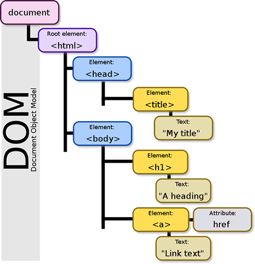

El Modelo de Objetos del Documento (DOM) es una interfaz de
programación de aplicaciones (API) para documentos HTML y XML. Define
la estructura lógica de los documentos y el modo en que se accede y
manipula un documento. En la especificación del DOM, el término
"documento" se utiliza en un sentido amplio. XML se utiliza cada vez
más como un medio para representar muchas clases diferentes de
información que puede ser almacenada en sistemas diversos, y mucha de
esta información se vería, en términos tradicionales, más como datos
que como documentos. Sin embargo, XML presenta estos datos como
documentos, y se puede usar el DOM para manipular estos datos. Con el
Modelo de Objetos del Documento los programadores pueden construir
documentos, navegar por su estructura, y añadir, modificar o eliminar
elementos y contenido. Se puede acceder a cualquier cosa que se
encuentre en un documento HTML o XML, y se puede modificar, eliminar o
añadir usando el Modelo de Objetos del Documento, salvo algunas
excepciones. En particular, aún no se han especificado las interfaces
DOM para los subconjuntos internos y externos de XML. El Document
Object Model se desarrolló para su uso en la World Wide Web y es donde
se sigue utilizando principalmente. Más concretamente, los navegadores
que permiten a los usuarios acceder a las ofertas de la web son los
que hacen uso de la interfaz estandarizada: De este modo, los clientes
web habituales utilizan las interfaces DOM o basadas en DOM para
convertir páginas HTML o XML activas. En este proceso, cada uno de los
componentes se agrupa en un nodo y estos se organizan en un dom tree.
En paralelo, el navegador correspondiente carga la versión convertida
del documento web en el disco duro local con el fin de analizarlo o
procesarlo y, finalmente, poder presentar la página en la forma que
desea el desarrollador. Los navegadores utilizan distintos motores
para la conversión (software de renderizado) como Gecko (Firefox),
Webkit (Safari) o Blink (Chrome, Edge, Opera), que también se basan en
el estándar DOM.
¿Cuál es el origen de DOM?
La historia de DOM se mezcla con la de Internet. La W3C necesitaba
convencer a Netscape y Microsoft, entre otras compañías, para
desarrollar un lenguaje de script padronizado. Fue a partir de ahí que
surgió el ECMAScript, conocido popularmente como JavaScript y
publicado en 1997. Con esa compatibilidad entre los navegadores, fue
posible que la W3C pudiera trabajar en un DOM estándar, conocido como
DOM Nivel 1 en el início de 1998. Claro que esta versión inicial dejó
unas brechas, haciendo necesario su perfeccionamiento con el tiempo.
Internet Explorer 5.0, por ejemplo, que era el navegador utilizado en
aquella época, tenía soporte; pero era bastante limitado. Con esto,
las aplicaciones web se veían afectadas por los códigos y soluciones
temporales; pues las funcionalidades eran restrictas. Era necesario
verificar todo el tiempo cuál era el navegador y la versión utilizada
para que DOM pudiera funciona. Muchas personas, incluso, utilizaban un
pequeño banner en el pie de la página informando en cual navegador y
resolución se recomendaba navegar en su sitio web. De esta forma, el
usuario podría optar por alterar el navegador para obtener más
velocidad y calidad. Desde el lanzamiento de DOM fueron creadas muchas
versiones, donde fueron agregando distintas funcionalidades que
utilizamos hoy, como: GetElementByid; Manipulación de eventos;
Serialization.Desde 2014, el DOM Nível 4 viene siendo desarrollado.
¿Cuáles son la ventajas de esta interfaz?
Con DOM, el programador tiene infinitas posibilidades. Este permite
crear aplicaciones que alteren los datos de la página, sin la
necesidad de hacer una actualización, por ejemplo. Es posible también
crear aplicaciones personalizables por el usuario y cambiar el layout
de la página; esta actividad tampoco requiere de actualización. DOM
permite arrastrar, mover y excluir elementos fácilmente, exigiendo del
profesional apenas creatividad para innovar.